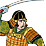

Requires
- Buildings:

Enables
- Buildings:

- Units:


Spawned Garrisons
- Units:
Basic Building Statistics (can be modified by difficulty level, arts, skills, traits and retainers)
- Cost: 1600
- +5 to repression in this province
- Unlocks an additional construction slot
- +5% to the replenishment rate in this province
- Consumes food: 2
- Recruitment capacity (units in training): +1
Clan Effects
- Improves the rate at which bushido arts are mastered: +1%
Description
High walls and higher towers impress the lowly.
A stronghold looms above the people in their villages, a reminder from dawn to dusk of where their loyalties should lie, and to whom they must pay their taxes. It is a strong base for the local garrison troops, enabling them to control the area, and act as a barrier to any invader. The stronghold also acts as a centre for recruiting new troops to serve in the daimyo's armies, and helps increase the clan's fame. Stone was introduced as a construction material for Japanese castles to provide protection against the elements and create sturdy foundations, always a problem in a nation so beset by earthquakes. Stone foundations also allowed the building to have more storeys. A large, sloped foundation platform was first carved out of the earth, which was then clad in stone to make a very strong bastion. These foundations could support impressive multi-storeyed towers, a sign of wealth and power. The bastions were also obstacles for any enemy attack, and were perfect for the defenders to rain arrows down on besiegers.